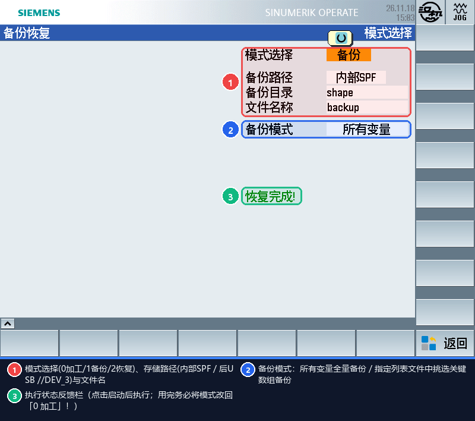

5.4 NC 全局参数备份与恢复
在批量更换产品型号（如从 M20 滚珠丝杠切换为 M40 丝杠）或现场维修主板/清零 NC 前，操作员可使用系统内置的 参数备份恢复 模块，把所有工件工艺、滚轮位置、对刀结果和修整数据快速保存成可读文本文件，换型时一键还原。
在 CUSTOM 主页 点击 VS2 备份恢复（需 ac3 用户口令及以上 权限，且在 机床配置 中开启 TECHNOLOGY[56]=1）即可打开 a_backup_restore.com（Mask0）；进入后编辑备份路径、目录、名称与备份模式等字段需 ac4（钥匙开关 3 档） 权限。

1. 模式选择与备份介质说明
界面顶行提供核心切换开关 MODE_CHOICE（绑定 NC 全局变量 CHOICE）：
模式选项（CHOICE 值） |
运行效果说明 |
|---|---|
0：加工（默认正常生产态） |
执行主程序时正常进行磨削、修整或对刀 |
1：备份 |
在 AUTO 模式按下循环启动，运行 INFO_INIT 或 A_BACKUP_RESTORE.SPF 后不加工工件，只将当前 NC 参数写入备份文件 |
2：恢复 |
在 AUTO 模式按下循环启动，从指定备份文件读取数值并回写覆盖当前 NC 全局变量与 R 参数 |
关键警告：完成参数备份或恢复之后，必须立即将模式切换回
0（加工）！否则下次操作工按绿键“循环启动”加工零件时，机床不会磨削，而是继续重复备份或用旧备份文件覆盖当前刚刚调好的参数！
支持的存储路径选项
- 备份路径（
BACKUP_POS）：0内部 SPF（默认用户/子程序存储区）、2前 USB、3CF 卡。- 注意：根据西门子测试限制，前 USB 写入需预先在
/oem/sinumerik/nck/（或user）中部署extdev.ini并重启 CNC；备份通常不直接向后置 USB 写入。
- 注意：根据西门子测试限制，前 USB 写入需预先在
- 恢复路径（
RESTORE_POS）：0内部 SPF、1后 USB（//DEV_3）、2前 USB、3CF 卡。- 注意：读取后 USB 文件时，必须在 调试 → HMI → 逻辑驱动器 中新增名称严格为
//DEV_3的路径。
- 注意：读取后 USB 文件时，必须在 调试 → HMI → 逻辑驱动器 中新增名称严格为
2. 全量备份 vs 自定义变量清单（BACKUP_TYPE）
| 界面字段 | 含义与要求 |
|---|---|
| 备份目录 / 文件名称 | 指定导出文件夹名（BACKUP_DIR）与文件名（BACKUP_NAME，如 WK_M32 / PAR_M32）；文件夹若不存在由 NC 自动创建 |
| 恢复目录 / 文件名称 | 指定恢复来源文件夹名（RESTORE_DIR）与文件名（RESTORE_NAME），与下方恢复 存储位置（RESTORE_POS）独立配置，防止误覆写常用备份 |
| 备份模式 | 0 所有变量：完整打包系统中全部关键 MGUD 数组；1 自定义变量：仅按开发者或工艺员提供的变量表读取并导出指定的参数子集 |
| 列表目录 / 列表名称 / 列表行数 | 仅当 备份模式 = 自定义变量 时配置：• 列表文件默认存放在系统子程序路径下的指定文件夹内，文件名为纯文本 .TXT（输入 列表名称 时无需填写 .TXT 后缀）；• 列表行数（ FILE_LINE_COUNT） 上限为 0 ~ 790 行，必须准确填写该文本文件包含空行与 ; 注释行在内的 实际总行数！ |
自定义备份变量表语法规范（PAR_DEMO.TXT）
在文本文件中每行定义一个变量名，遵循以下 4 条语法约定：
- 最多包含有效变量及注释/空行不超过
790个/行，且 必须在界面列表行数中声明文件总行数； - 行首使用分号
;开头的行视为注释，运行时自动跳过；空行同样自动跳过； - 如需备份 字符串类型（
STRING）全局变量，必须在变量名前加星号*； - 实数/整数全局数组或系统
R参数直接写名称即可：
;****************************
;PAR_DEMO.TXT (需声明列表行数 = 14)
R0
R1
INI[5]
*STRING
;注释行示例
WORK[5]
;*****************************
3. 恢复操作标准步骤
- 打开 CUSTOM → 备份恢复；
- 将
模式选择设为2（恢复）； - 依次核对
存储位置、恢复文件夹名称、恢复程序名（确认与备份时一致，且目标文件存在）； - 切换到
AUTO模式，按下机床面板 循环启动（Cycle Start）； - 观察界面底部状态提示条
BR_MSG返回成功提示，随后 立刻将模式选择改回0（加工），即可恢复正常生产。